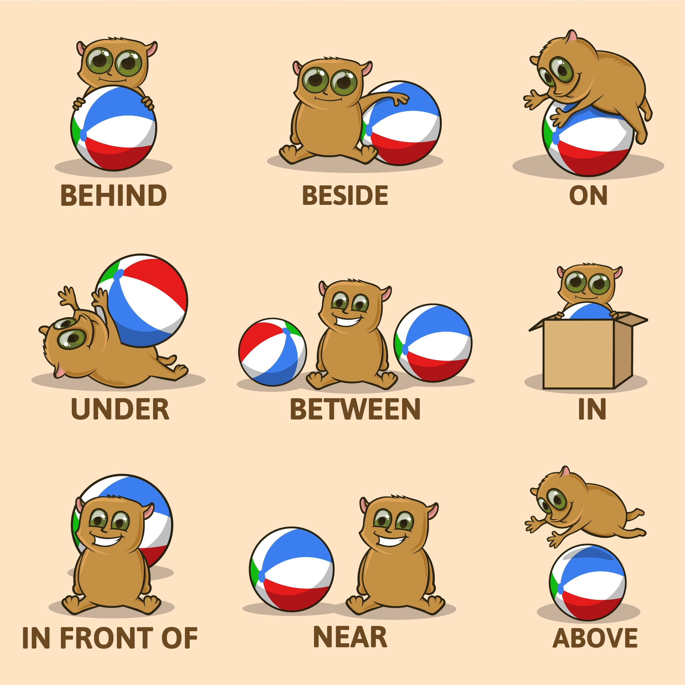

⏳ Prepositions of TIME (Zaman)
Genel Bakış
Zamanı ifade ederken "In, On, At" üçlüsünü piramit gibi düşünebilirsin:
- IN En Geniş: Yıllar, Aylar, Mevsimler
- ON Daha Dar: Günler, Tarihler
- AT En Dar: Saatler
| Edat | Kullanım | Örnekler |
|---|---|---|
| IN | Yıllar, Aylar, Mevsimler, Günün bölümleri |
• In 2024 • In July (Temmuz'da) • In summer (Yazın) • In the morning |
| ON | Günler, Tam tarihler, Özel günler |
• On Monday • On 23rd April • On my birthday • On New Year's Day |
| AT | Saatler, "Gece", "Hafta sonu" |
• At 5 o'clock • At 09:30 • At night (İstisna!) • At the weekend |
🏠 Prepositions of PLACE (Yer/Konum)
Neredesin?
IN (İçinde): Sınırları olan yerlerde (Oda, Şehir, Araba).
Örn: In the box, In Istanbul, In the car.
ON (Üstünde): Bir yüzeyin üzerindeysen (Masa, Duvar, Zemin).
Örn: On the table, On the wall, On the bus (Toplu taşımada ON kullanılır).
AT (Nokta/-de/-da): Genel konum, kapı, durak.
Örn: At home, At school, At work, At the bus stop.
📦 Other Place Prepositions
- 🔽 Under: Altında (The cat is under the table.)
- 👉 Next to: Yanında (The bank is next to the cinema.)
- ↔️ Between: Arasında (Between Ali and Ayşe.)
- 👀 In front of: Önünde (In front of the house.)
- 🔙 Behind: Arkasında (Behind the school.)
- 🆚 Opposite: Karşısında (Opposite the hospital.)

📍 Prepositions (Edatlar) Örnekleri
Time (at, in, on)
The class starts at 9 o'clock.
We go on holiday in August.
They exercise on Wednesdays.
We don't eat at midnight.
They don't travel in winter.
He doesn't study on Fridays.
Do you study at 6 a.m.?
Is the exam in December?
Are you free on Saturday?
Place (in, on, under)
The book is on the shelf.
The money is in my wallet.
The shoes are under the chair.
The phone is not on the sofa.
She is not in the kitchen.
The cat is not behind the tree.
Is the sugar in the cupboard?
Are they at school?
Is the hospital near the park?